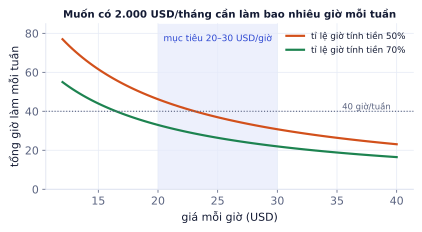
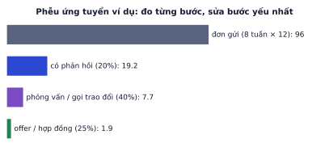

Giai đoạn P10 · Portfolio và đi làmTuần 24–45Có nội dung đầy đủ
Mục tiêu cuối của lộ trình: có việc làm hoặc hợp đồng đầu tiên, đặc biệt là việc remote với mức thu nhập theo giờ như bạn mong muốn. Bài này nói thẳng về thị trường, các cửa vào thực tế cho người mới, cách định giá (có biểu đồ số giờ cần làm theo giá), viết proposal, và cách ứng tuyển có hệ thống thay vì gửi CV may rủi.
Thị trường nói gì
Vì sao cần học
Biết thị trường giúp bạn đặt kỳ vọng đúng và chọn cửa vào đúng. Gửi 100 CV vào vị trí "Senior AI Engineer remote" khi chưa có dự án sẽ chỉ nhận im lặng, và dễ khiến bạn nghĩ mình không đủ giỏi. Trong khi đó có những cửa khác vào dễ hơn, tạo thu nhập sớm và tích lũy kinh nghiệm cho bước sau.
Phân tích tin tuyển dụng năm 2026 cho thấy: vị trí AI Engineer dành cho entry-level rất ít (khoảng 6% trong một mẫu 3.449 tin), và vị trí remote hoàn toàn cũng là thiểu số. Phần lớn nhà tuyển dụng muốn người đã ship dự án. Điều này không có nghĩa là không vào được, mà là cần bằng chứng (P10.1) và nhiều cửa cùng lúc.
Các cửa vào cho người mới
Cửa
Phù hợp khi
Ghi chú
Freelance dự án nhỏ
có portfolio, giao tiếp tốt
chatbot/RAG cho doanh nghiệp nhỏ, tự động hóa xử lý tài liệu, ảnh sản phẩm cho shop online
Việc đánh giá và tạo dữ liệu cho AI
có nền kỹ thuật, tiếng Anh tốt
nhiều nền tảng tuyển người viết và chấm lời giải code, toán, đánh giá câu trả lời model; trả theo giờ, remote
Công ty Việt Nam có làm AI
muốn môi trường học nhanh
nhiều công ty cho làm remote/hybrid; kinh nghiệm thật đầu tiên rất giá trị
Mã nguồn mở
muốn được biết tới
sửa lỗi, viết tài liệu, ví dụ cho thư viện AI; người duy trì có thể giới thiệu việc
Chuyển tiếp từ thực tập
đang thực tập
làm tốt và đề nghị ở lại hoặc làm bán thời gian từ xa
Chạy song song 2–3 cửa. Việc đánh giá dữ liệu AI và freelance nhỏ tạo thu nhập sớm, đồng thời là kinh nghiệm ghi vào CV.
Ví dụ từng bước
Một tổ hợp thực tế trong 3 tháng đầu:
Cửa 1: việc đánh giá dữ liệu AI theo giờ, 15–20 giờ/tuần: thu nhập đều, luyện tiếng Anh kỹ thuật, hiểu cách model được chấm (rất liên quan P4.3, P6.2).
Cửa 2: 1–2 dự án freelance nhỏ (chatbot RAG, xử lý tài liệu): đánh giá đầu tiên trên nền tảng, câu chuyện cho CV.
Cửa 3: mỗi tuần 5–10 đơn có chọn lọc vào công ty, kèm link dự án.
Cửa 1 lo thu nhập, cửa 2 lo bằng chứng, cửa 3 lo bước tiến dài hạn.
Định giá
Với freelance, tính ngược từ thu nhập mong muốn:
Giờ tính tiền cần = thu nhập mục tiêu / giá mỗi giờ
Tổng giờ làm = giờ tính tiền / tỉ lệ giờ tính tiền (tìm khách, giao tiếp, sửa lỗi không tính tiền được)
Người mới thường có tỉ lệ giờ tính tiền 50–70%.

Muốn có 2.000 USD/tháng: ở 25 USD/giờ và tỉ lệ giờ tính tiền 70%, cần khoảng 26 giờ/tuần; nếu tỉ lệ chỉ 50% thì khoảng 37 giờ/tuần. Ở mức 20–30 USD/giờ, tăng tỉ lệ giờ tính tiền có tác dụng ngang tăng giá.
Ví dụ từng bước
Mục tiêu 2.000 USD/tháng, giá 25 USD/giờ, tỉ lệ giờ tính tiền 70%:
Giờ tính tiền: 2.000 / 25 = 80 giờ/tháng.
Tổng giờ làm: 80 / 0,7 ≈ 114 giờ/tháng, tức khoảng 26 giờ/tuần (một tháng khoảng 4,33 tuần).
Cách tăng tỉ lệ giờ tính tiền: khách quen, dự án dài, mẫu proposal và mẫu code tái sử dụng, ít thời gian tìm việc hơn.
Báo giá trọn gói
Dự án trọn gói: ước lượng giờ, nhân giá, cộng 20–30% dự phòng, và ghi rõ phạm vi (làm gì, không làm gì, số lần sửa).
Ví dụ từng bước
Tự động trích xuất thông tin hóa đơn thành bảng tính cho một cửa hàng: ước lượng 40 giờ, giá 22 USD/giờ, dự phòng 20%.
40 × 22 × 1,2 = 1.056 USD, làm tròn 1.050. Phạm vi kèm theo: 3 mẫu hóa đơn, xuất Google Sheets, kiểm tra chéo tổng tiền (P7.2), 2 vòng chỉnh sửa, 2 tuần hỗ trợ. Mẫu hóa đơn thứ 4 trở đi tính thêm.
Lỗi hay gặp
Báo giá quá thấp để "lấy khách đầu tiên" rồi kẹt. Giá 5 USD/giờ thu hút khách coi trọng giá rẻ nhất, thường đòi nhiều và đánh giá khắt khe; nâng giá với chính khách đó rất khó. Tốt hơn: giá hợp lý cho người mới, nhưng phạm vi nhỏ (một phần việc trả trước) để giảm rủi ro cho khách.
Proposal và giao tiếp với khách
Một proposal tốt ngắn (150–250 từ):
Câu đầu nhắc đúng vấn đề của khách (chứng tỏ bạn đã đọc kỹ).
Cách bạn sẽ làm trong 3–4 bước, có một câu hỏi làm rõ thông minh.
Bằng chứng: một dự án tương tự kèm link và một con số.
Thời gian và giá (hoặc đề xuất bắt đầu bằng một phần nhỏ trả trước).
Ví dụ từng bước
Mở đầu yếu và mạnh cho tin "cần chatbot trả lời khách về sản phẩm, có 200 sản phẩm":
Yếu
Mạnh
"Hello, I am an experienced AI developer with many skills in Python and machine learning. I can do your project."
"You need a chatbot that answers questions about your 200 products accurately, without inventing prices. I'd build it on your product sheet with retrieval and cite the product for every answer, so wrong answers are easy to spot."
Câu mạnh nhắc lại đúng vấn đề, nêu rủi ro khách lo nhất (bịa giá), và cách bạn xử lý.
Khi làm: cập nhật tiến độ đều (2–3 lần/tuần), báo sớm khi có rủi ro, giao kèm hướng dẫn dùng. Khách hài lòng cho đánh giá tốt và việc tiếp theo.
Ứng tuyển có hệ thống
Ghi mọi đơn ứng tuyển vào một bảng: ngày, công ty/khách, vị trí, kênh, phiên bản CV, trạng thái, phản hồi. Mỗi 2 tuần xem lại tỉ lệ ở từng bước.

Ví dụ 8 tuần, 12 đơn mỗi tuần: 96 đơn, 20% có phản hồi, 40% trong số đó tới phỏng vấn, 25% thành offer: khoảng 2 offer.
Ví dụ từng bước
Với các tỉ lệ ở hình: xác suất một đơn thành offer = 0,2 × 0,4 × 0,25 = 2%, cần khoảng 50 đơn cho một offer, tức khoảng 4 tuần ở nhịp 12 đơn/tuần.
Bước nào yếu thì sửa bước đó:
Triệu chứng
Bước yếu
Sửa
ít phản hồi
CV, proposal, chọn sai vị trí
viết lại theo P10.2, nhắm vị trí sát hồ sơ hơn
có phản hồi, ít phỏng vấn
sàng lọc qua điện thoại, bài test nhà
luyện câu chuyện dự án, làm bài test kỹ
có phỏng vấn, không offer
vòng kỹ thuật hoặc hành vi
luyện theo P10.3, xin phản hồi sau mỗi lần trượt
Ghi nhớ: tìm việc là một phễu đo được. Đo từng bước, sửa bước yếu nhất, giữ đều số lượng mỗi tuần.
Tự kiểm tra nhanh
Tóm tắt bài và thuật ngữ
Chủ đề
Ý chính
Thị trường
entry-level và remote hoàn toàn là thiểu số; cần bằng chứng
Cửa vào
đánh giá dữ liệu AI, freelance nhỏ, công ty Việt Nam, mã nguồn mở, thực tập; chạy 2–3 cửa
Định giá
tính ngược từ thu nhập; tỉ lệ giờ tính tiền 50–70%; dự phòng 20–30%; ghi phạm vi
Proposal
vấn đề của khách → cách làm → bằng chứng → thời gian, giá
Ứng tuyển
bảng theo dõi, đo phễu, sửa bước yếu nhất
Thuật ngữ
Nghĩa
billable hours
giờ tính tiền được
fixed-price / hourly
trọn gói / theo giờ
scope
phạm vi công việc
proposal
thư đề xuất khi ứng tuyển dự án freelance
milestone
mốc bàn giao và thanh toán
funnel / conversion rate
phễu / tỉ lệ chuyển đổi giữa các bước
Ô tự chấm đã giải đúng0 / 3
Bài 1
Tính giờ làm từ thu nhập mục tiêu
tính tay
Thu nhập mục tiêu 3.000 USD/tháng, giá 25 USD/giờ, tỉ lệ giờ tính tiền 60%.
Lời giải
3000/25 = 120 giờ tính tiền, chia 0.6 = 200 giờ làm (khoảng 46 giờ/tuần). Ở 30 USD/giờ còn khoảng 167 giờ. Tăng giá nhờ portfolio mạnh và tăng tỉ lệ giờ tính tiền (khách quen, dự án dài) hiệu quả hơn làm thêm giờ.
Bài 2
Phễu ứng tuyển
tính tay
Tỉ lệ: đơn → có phản hồi 15%, phản hồi → phỏng vấn 50%, phỏng vấn → offer 20%. Gửi 10 đơn mỗi tuần.
Lời giải
0.15 × 0.5 × 0.2 = 1.5%, cần khoảng 67 đơn, gần 7 tuần ở nhịp 10 đơn/tuần. Tăng tỉ lệ phản hồi từ 15% lên 30% (CV và proposal tốt hơn) rút ngắn còn khoảng 3,5 tuần: cải thiện chất lượng thường đáng hơn tăng số lượng.
Bài 3
Báo giá trọn gói
tính tay
Dự án chatbot RAG cho một shop: ước lượng 30 giờ, giá 25 USD/giờ, cộng 25% dự phòng.
Lời giải
30 × 25 = 750, cộng 25% thành 937,5 USD, làm tròn 950. Kèm phạm vi: số tài liệu, kênh tích hợp, 2 vòng chỉnh sửa, 2 tuần hỗ trợ sau bàn giao.
Bài 4
Viết proposal
khái niệm
Tin tuyển dụng: "Cần người xây chatbot trả lời khách hàng cho shop nội thất online, dựa trên file FAQ và danh mục sản phẩm (khoảng 300 sản phẩm). Tích hợp vào website. Ngân sách linh hoạt." Viết proposal 150–250 từ bằng tiếng Anh theo 4 phần ở phần lý thuyết.
Lời giải
Một proposal tốt: câu đầu nhắc đúng FAQ + 300 sản phẩm + website; cách làm 3–4 bước (đưa FAQ và danh mục vào hệ RAG có trích dẫn, xử lý câu hỏi về giá và tồn kho bằng tra cứu trực tiếp thay vì để model đoán, widget chat cho website, bộ 40 câu hỏi thử để đo trước khi bàn giao); một câu hỏi làm rõ (website dùng nền tảng gì, có cần chuyển cho nhân viên khi bot không trả lời được không); bằng chứng (link dự án RAG, recall@5 và tỉ lệ trả lời đúng); thời gian và giá, đề xuất mốc đầu là bản demo trên 50 sản phẩm. Gửi Claude để được góp ý.
Bài 5
Bảng theo dõi ứng tuyển
thiết kế
Thiết kế các cột của bảng theo dõi ứng tuyển và 3 chỉ số bạn xem lại mỗi 2 tuần.
Lời giải
Cột: ngày, công ty/khách, vị trí/dự án, kênh (LinkedIn, nền tảng freelance, giới thiệu, email trực tiếp), loại (full-time, part-time, hợp đồng, freelance), remote/hybrid, mức thu nhập công bố, phiên bản CV/proposal, trạng thái (đã gửi, phản hồi, phỏng vấn, offer, từ chối), ngày cập nhật, ghi chú và bài học. Chỉ số: tỉ lệ phản hồi theo kênh, tỉ lệ phỏng vấn trên phản hồi, tỉ lệ offer trên phỏng vấn. Kênh nào tỉ lệ phản hồi cao thì dồn sức vào đó.
Ứng tuyển có hệ thống
Các bước
Chọn 2–3 cửa vào phù hợp (ví dụ freelance RAG nhỏ + việc đánh giá dữ liệu AI + công ty Việt Nam làm remote).
Tạo bảng theo dõi như bài tập 5.
Viết 5 proposal mẫu cho 5 tin tuyển dụng thật, nhờ Claude góp ý, sửa.
Mỗi tuần gửi 10 đơn hoặc proposal chất lượng, mỗi cái chỉnh theo tin tuyển dụng.
Mỗi 2 tuần xem lại phễu, sửa bước yếu nhất (CV, proposal, phỏng vấn).
Sau mỗi phỏng vấn hoặc dự án, ghi 3 bài học và cập nhật bộ câu chuyện STAR.
Xong khi
Có hợp đồng hoặc offer đầu tiên.
Bảng theo dõi có ít nhất 40 đơn và số liệu phễu theo kênh.